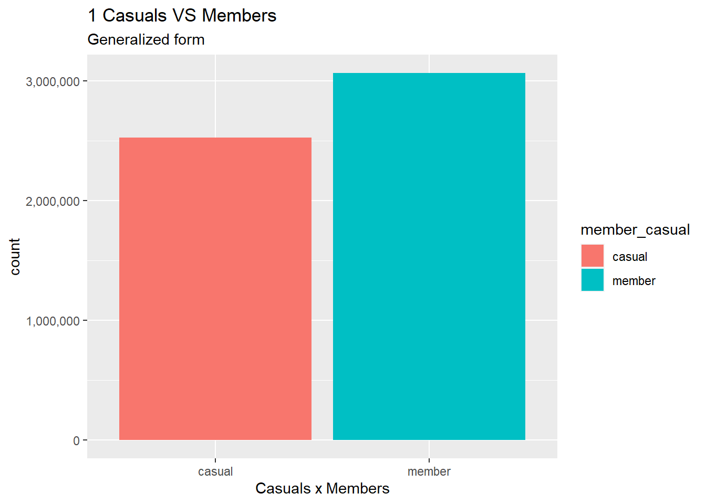
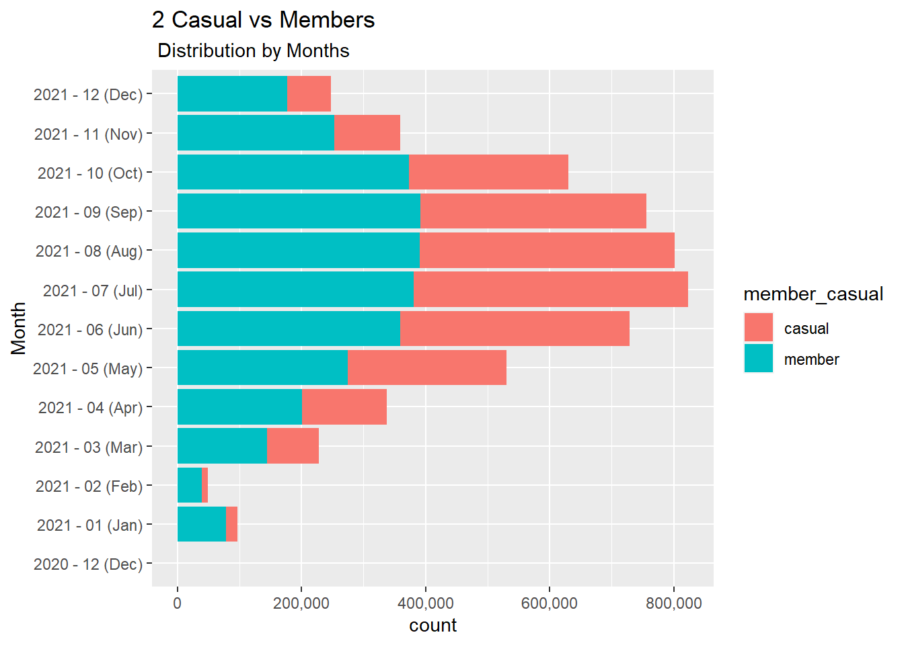
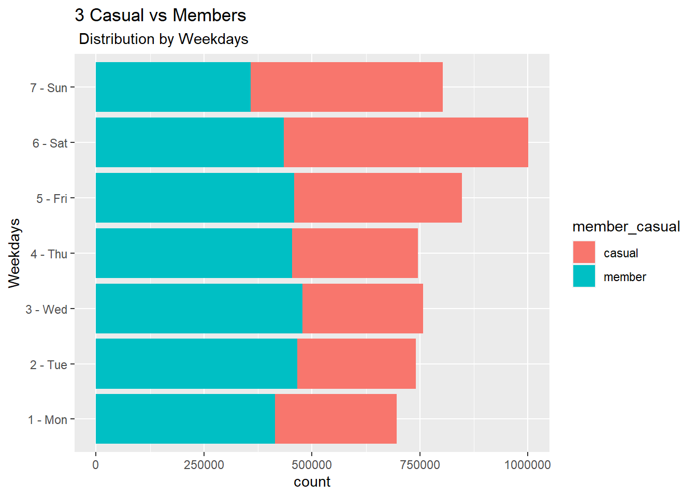
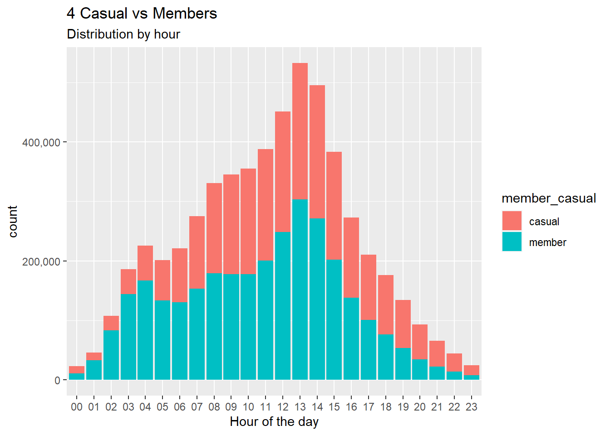
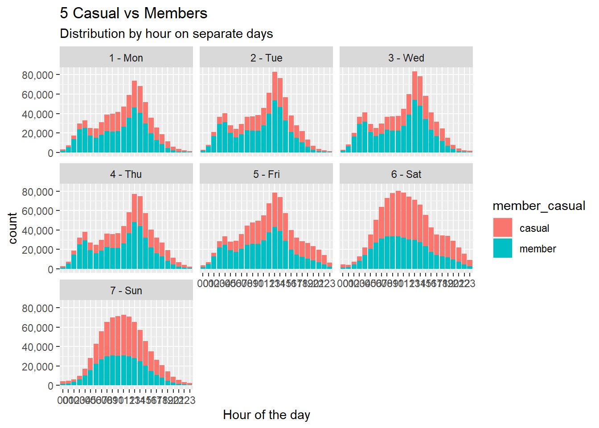

You are a junior data analyst working in the marketing analyst team at Cyclistic, a bike-share company in Chicago. The director of marketing believes the company’s future success depends on maximizing the number of annual memberships. Therefore, your team wants to understand how casual riders and annual members use Cyclistic bikes dierently. From these insights, your team will design a new marketing strategy to convert casual riders into annual members. But first, Cyclistic executives must approve your recommendations, so they must be backed up with compelling data insights and professional data visualizations.
Characters and teams Cyclistic: A bike-share program that features more than 5,800 bicycles and 600 docking stations. Cyclistic sets itself apart by also oering reclining bikes, hand tricycles, and cargo bikes, making bike-share more inclusive to people with disabilities and riders who can’t use a standard two-wheeled bike. The majority of riders opt for traditional bikes; about 8% of riders use the assistive options. Cyclistic users are more likely to ride for leisure, but about 30% use them to commute to work each day. Lily Moreno: The director of marketing and your manager. Moreno is responsible for the development of campaigns and initiatives to promote the bike-share program. These may include email, social media, and other channels. Cyclistic marketing analytics team: A team of data analysts who are responsible for collecting, analyzing, and reporting data that helps guide Cyclistic marketing strategy. You joined this team six months ago and have been busy learning about Cyclistic’s mission and business goals — as well as how you, as a junior data analyst, can help Cyclistic achieve them. Cyclistic executive team: The notoriously detail-oriented executive team will decide whether to approve the recommended marketing program.#loading libraries
library(plyr)
library(tidyverse)## ── Attaching packages ─────────────────────────────────────── tidyverse 1.3.2 ──
## ✔ ggplot2 3.3.6 ✔ purrr 0.3.4
## ✔ tibble 3.1.8 ✔ dplyr 1.0.10
## ✔ tidyr 1.2.1 ✔ stringr 1.4.1
## ✔ readr 2.1.2 ✔ forcats 0.5.2
## ── Conflicts ────────────────────────────────────────── tidyverse_conflicts() ──
## ✖ dplyr::arrange() masks plyr::arrange()
## ✖ purrr::compact() masks plyr::compact()
## ✖ dplyr::count() masks plyr::count()
## ✖ dplyr::failwith() masks plyr::failwith()
## ✖ dplyr::filter() masks stats::filter()
## ✖ dplyr::id() masks plyr::id()
## ✖ dplyr::lag() masks stats::lag()
## ✖ dplyr::mutate() masks plyr::mutate()
## ✖ dplyr::rename() masks plyr::rename()
## ✖ dplyr::summarise() masks plyr::summarise()
## ✖ dplyr::summarize() masks plyr::summarize()library(lubridate)##
## Attaching package: 'lubridate'
##
## The following objects are masked from 'package:base':
##
## date, intersect, setdiff, unionlibrary(DescTools)
library(scales)##
## Attaching package: 'scales'
##
## The following object is masked from 'package:purrr':
##
## discard
##
## The following object is masked from 'package:readr':
##
## col_factor#loading data set
csv_files <- list.files(path = "C:/Users/sadik/Downloads/CaseStudyPython", recursive = TRUE, full.names=TRUE)
#merging data set
tripdata_merged <- do.call(rbind, lapply(csv_files, read.csv))
#view of data
head(tripdata_merged)## ride_id rideable_type started_at ended_at
## 1 E19E6F1B8D4C42ED electric_bike 2021-01-23 16:14:19 2021-01-23 16:24:44
## 2 DC88F20C2C55F27F electric_bike 2021-01-27 18:43:08 2021-01-27 18:47:12
## 3 EC45C94683FE3F27 electric_bike 2021-01-21 22:35:54 2021-01-21 22:37:14
## 4 4FA453A75AE377DB electric_bike 2021-01-07 13:31:13 2021-01-07 13:42:55
## 5 BE5E8EB4E7263A0B electric_bike 2021-01-23 02:24:02 2021-01-23 02:24:45
## 6 5D8969F88C773979 electric_bike 2021-01-09 14:24:07 2021-01-09 15:17:54
## start_station_name start_station_id end_station_name end_station_id
## 1 California Ave & Cortez St 17660
## 2 California Ave & Cortez St 17660
## 3 California Ave & Cortez St 17660
## 4 California Ave & Cortez St 17660
## 5 California Ave & Cortez St 17660
## 6 California Ave & Cortez St 17660
## start_lat start_lng end_lat end_lng member_casual
## 1 41.90034 -87.69674 41.89 -87.72 member
## 2 41.90033 -87.69671 41.90 -87.69 member
## 3 41.90031 -87.69664 41.90 -87.70 member
## 4 41.90040 -87.69666 41.92 -87.69 member
## 5 41.90033 -87.69670 41.90 -87.70 casual
## 6 41.90041 -87.69676 41.94 -87.71 casual#--------------------Preparing and Processing-------------------------
#checking Null values and drop if there
colSums(is.na(tripdata_merged))## ride_id rideable_type started_at ended_at
## 0 0 0 0
## start_station_name start_station_id end_station_name end_station_id
## 0 0 0 0
## start_lat start_lng end_lat end_lng
## 0 0 4771 4771
## member_casual
## 0#No Null values find in my dataset
tripdata_cleaned <- tripdata_merged[complete.cases(tripdata_merged), ]
# removing data where ending time is greater than starting time.
tripdata_cleaned <- tripdata_cleaned %>%
filter(tripdata_cleaned$started_at < tripdata_cleaned$ended_at)
#Changing datatype of datetime
tripdata_cleaned$started_at <- as.POSIXct(tripdata_cleaned$started_at, "%Y-%m-%d %H:%M:%S")## Warning in strptime(xx, f, tz = tz): unknown timezone '%Y-%m-%d %H:%M:%S'## Warning in as.POSIXct.POSIXlt(x): unknown timezone '%Y-%m-%d %H:%M:%S'## Warning in strptime(x, f, tz = tz): unknown timezone '%Y-%m-%d %H:%M:%S'## Warning in as.POSIXct.POSIXlt(as.POSIXlt(x, tz, ...), tz, ...): unknown timezone
## '%Y-%m-%d %H:%M:%S'tripdata_cleaned$ended_at <- as.POSIXct(tripdata_cleaned$ended_at, "%Y-%m-%d %H:%M:%S")## Warning in strptime(xx, f, tz = tz): unknown timezone '%Y-%m-%d %H:%M:%S'## Warning in as.POSIXct.POSIXlt(x): unknown timezone '%Y-%m-%d %H:%M:%S'## Warning in strptime(x, f, tz = tz): unknown timezone '%Y-%m-%d %H:%M:%S'## Warning in as.POSIXct.POSIXlt(as.POSIXlt(x, tz, ...), tz, ...): unknown timezone
## '%Y-%m-%d %H:%M:%S'#Creating a column for month and year separately for calculation
tripdata_cleaned <- tripdata_cleaned %>%
mutate(year_month = paste(strftime(tripdata_cleaned$started_at, "%Y"),
"-",
strftime(tripdata_cleaned$started_at, "%m"),
paste("(",strftime(tripdata_cleaned$started_at, "%b"), ")", sep="")))
unique(tripdata_cleaned$year_month)## [1] "2021 - 01 (Jan)" "2020 - 12 (Dec)" "2021 - 02 (Feb)" "2021 - 03 (Mar)"
## [5] "2021 - 04 (Apr)" "2021 - 05 (May)" "2021 - 06 (Jun)" "2021 - 07 (Jul)"
## [9] "2021 - 08 (Aug)" "2021 - 09 (Sep)" "2021 - 10 (Oct)" "2021 - 11 (Nov)"
## [13] "2021 - 12 (Dec)"#Creating column weekday for calculation
tripdata_cleaned <- tripdata_cleaned %>%
mutate(weekday = paste(strftime(tripdata_cleaned$started_at, "%u"),
"-",
strftime(tripdata_cleaned$started_at, "%a")))
unique(tripdata_cleaned$weekday)## [1] "6 - Sat" "3 - Wed" "4 - Thu" "5 - Fri" "1 - Mon" "7 - Sun" "2 - Tue"#Creating column for starting hour for calculation
tripdata_cleaned <- tripdata_cleaned %>%
mutate(start_hour = strftime(tripdata_cleaned$ended_at, "%H"))
unique(tripdata_cleaned$start_hour)## [1] "11" "13" "17" "08" "21" "10" "00" "05" "14" "07" "02" "04" "03" "06" "20"
## [16] "16" "19" "12" "15" "09" "18" "01" "23" "22"# calculate and creating column ride length
tripdata_cleaned$ride_length <- tripdata_cleaned$ended_at - tripdata_cleaned$started_at
# calculate mean of ride_length
tripdata_cleaned %>%
summarize(mean(ride_length))## mean(ride_length)
## 1 1259.041 secs# calculate max ride_length
tripdata_cleaned %>%
summarize(max(ride_length))## max(ride_length)
## 1 3356649 secs# calculate min ride_length
tripdata_cleaned %>%
summarize(min(ride_length))## min(ride_length)
## 1 1 secs# calculate mode of day_of_week
Mode(tripdata_cleaned$weekday)## [1] "6 - Sat"
## attr(,"freq")
## [1] 1000358# calculate average ride_length for members and casual riders
tripdata_cleaned %>%
group_by(member_casual) %>%
summarise(summary=mean(ride_length))## # A tibble: 2 × 2
## member_casual summary
## <chr> <drtn>
## 1 casual 1814.4844 secs
## 2 member 801.3467 secs#calculate average ride_length by days of week
tripdata_cleaned %>%
group_by(weekday) %>%
summarise(summary_day=mean(ride_length))## # A tibble: 7 × 2
## weekday summary_day
## <chr> <drtn>
## 1 1 - Mon 1187.447 secs
## 2 2 - Tue 1070.923 secs
## 3 3 - Wed 1054.328 secs
## 4 4 - Thu 1075.458 secs
## 5 5 - Fri 1211.926 secs
## 6 6 - Sat 1512.685 secs
## 7 7 - Sun 1591.839 secs#calculate No. of rides by user per day of week
tripdata_cleaned %>%
group_by(ride_id, weekday) %>%
summarise(no_of_ride=n())## `summarise()` has grouped output by 'ride_id'. You can override using the
## `.groups` argument.## # A tibble: 5,589,640 × 3
## # Groups: ride_id [5,589,640]
## ride_id weekday no_of_ride
## <chr> <chr> <int>
## 1 000002EBE159AE82 2 - Tue 1
## 2 0000080D43BAA9E4 7 - Sun 1
## 3 00000B4F1F71F9C2 3 - Wed 1
## 4 00000CAE95438C9D 2 - Tue 1
## 5 00000EBBC119168C 7 - Sun 1
## 6 000019B7F053D461 5 - Fri 1
## 7 00001A81D056B01B 3 - Wed 1
## 8 00001B4F79D102B5 3 - Wed 1
## 9 00001BEE76AB24E0 2 - Tue 1
## 10 00001DCF2BC423F4 7 - Sun 1
## # … with 5,589,630 more rows#-----------------------------------------------Analyzing and Visualizing-----------------------
fig <- function(width, heigth){options(repr.plot.width = width, repr.plot.height = heigth)}
#Generalize form of Casual VS Member riders
tripdata_cleaned %>%
group_by(member_casual) %>%
summarise(count = length(ride_id),
'%' = (length(ride_id) / nrow(tripdata_cleaned)) * 100)## # A tibble: 2 × 3
## member_casual count `%`
## <chr> <int> <dbl>
## 1 casual 2525174 45.2
## 2 member 3064466 54.8#Graph 1 General distribution
fig(16,8)
ggplot(tripdata_cleaned, aes(member_casual, fill=member_casual)) +
geom_bar() +
labs(x="Casuals x Members", title="1 Casuals VS Members", subtitle = "Generalized form")+
scale_y_continuous(labels = comma)
#Data distribution in the months
tripdata_cleaned %>%
group_by(year_month) %>%
summarise(count=length(ride_id),
'%' = (length(ride_id) / nrow(tripdata_cleaned))*100,
'members_p' = (sum(member_casual == 'member') /length(ride_id))*100,
'casual_p' = (sum(member_casual == 'casual') /length(ride_id))*100,
'member_casual_%_diff' = members_p - casual_p )## # A tibble: 13 × 6
## year_month count `%` members_p casual_p `member_casual_%_diff`
## <chr> <int> <dbl> <dbl> <dbl> <dbl>
## 1 2020 - 12 (Dec) 170 0.00304 51.8 48.2 3.53
## 2 2021 - 01 (Jan) 96564 1.73 81.3 18.7 62.7
## 3 2021 - 02 (Feb) 49432 0.884 79.6 20.4 59.2
## 4 2021 - 03 (Mar) 228347 4.09 63.2 36.8 26.5
## 5 2021 - 04 (Apr) 337509 6.04 59.5 40.5 19.0
## 6 2021 - 05 (May) 530759 9.50 51.7 48.3 3.39
## 7 2021 - 06 (Jun) 729093 13.0 49.2 50.8 -1.58
## 8 2021 - 07 (Jul) 823734 14.7 46.2 53.8 -7.54
## 9 2021 - 08 (Aug) 801207 14.3 48.8 51.2 -2.44
## 10 2021 - 09 (Sep) 755685 13.5 51.9 48.1 3.79
## 11 2021 - 10 (Oct) 630388 11.3 59.3 40.7 18.6
## 12 2021 - 11 (Nov) 359576 6.43 70.3 29.7 40.7
## 13 2021 - 12 (Dec) 247176 4.42 71.9 28.1 43.7#Graph2 Distribution by months
tripdata_cleaned %>%
ggplot(aes(year_month, fill=member_casual))+
geom_bar()+
labs(x="Month", title="2 Casual vs Members", subtitle = " Distribution by Months")+
scale_y_continuous(labels = comma)+
coord_flip()
#Data distribution in the weekdays
tripdata_cleaned %>%
group_by(weekday) %>%
summarise(count=length(ride_id),
'%' = (length(ride_id) / nrow(tripdata_cleaned))*100,
'members_p' = (sum(member_casual == 'member') /length(ride_id))*100,
'casual_p' = (sum(member_casual == 'casual') /length(ride_id))*100,
'member_casual_%_diff' = members_p - casual_p )## # A tibble: 7 × 6
## weekday count `%` members_p casual_p `member_casual_%_diff`
## <chr> <int> <dbl> <dbl> <dbl> <dbl>
## 1 1 - Mon 695757 12.4 59.6 40.4 19.2
## 2 2 - Tue 740426 13.2 63.0 37.0 25.9
## 3 3 - Wed 757794 13.6 63.1 36.9 26.1
## 4 4 - Thu 745252 13.3 61.0 39.0 21.9
## 5 5 - Fri 847091 15.2 54.2 45.8 8.36
## 6 6 - Sat 1000358 17.9 43.4 56.6 -13.1
## 7 7 - Sun 802962 14.4 44.6 55.4 -10.8#Graph3 Distribution by weekdays
tripdata_cleaned %>%
ggplot(aes(weekday, fill=member_casual))+
geom_bar()+
labs(x="Weekdays", title="3 Casual vs Members", subtitle = " Distribution by Weekdays")+
coord_flip()
#Data Distribution by hour in day
tripdata_cleaned %>%
group_by(start_hour) %>%
summarise(count = length(ride_id),
'%' = (length(ride_id) / nrow(tripdata_cleaned)) * 100,
'members_p' = (sum(member_casual == "member") / length(ride_id)) * 100,
'casual_p' = (sum(member_casual == "casual") / length(ride_id)) * 100,
'member_casual_%_difer' = members_p - casual_p)## # A tibble: 24 × 6
## start_hour count `%` members_p casual_p `member_casual_%_difer`
## <chr> <int> <dbl> <dbl> <dbl> <dbl>
## 1 00 23067 0.413 49.2 50.8 -1.69
## 2 01 45952 0.822 72.3 27.7 44.6
## 3 02 107767 1.93 77.2 22.8 54.5
## 4 03 186092 3.33 77.4 22.6 54.8
## 5 04 225470 4.03 74.1 25.9 48.3
## 6 05 201349 3.60 66.5 33.5 33.1
## 7 06 220992 3.95 59.0 41.0 17.9
## 8 07 275432 4.93 55.7 44.3 11.5
## 9 08 330887 5.92 54.1 45.9 8.18
## 10 09 345502 6.18 51.5 48.5 3.00
## # … with 14 more rows#Graph4 Distribution of by hours
tripdata_cleaned %>%
ggplot(aes(start_hour, fill=member_casual)) +
labs(x="Hour of the day", title="4 Casual vs Members", subtitle = "Distribution by hour") +
scale_y_continuous(labels = comma) +
geom_bar()
#Graph 5 Using FACET WRAP we divide each day by their respective hours
tripdata_cleaned %>%
ggplot(aes(start_hour, fill=member_casual)) +
labs(x="Hour of the day", title="5 Casual vs Members", subtitle = "Distribution by hour on separate days") +
scale_y_continuous(labels = comma) +
geom_bar()+
facet_wrap(~weekday)
#Graph 6 for Weekend vs Weekdays
tripdata_cleaned %>%
mutate(type_of_weekday = ifelse(weekday == '6 - Sat' | weekday == '7 - Sun',
'weekend',
'weekday')) %>%
ggplot(aes(start_hour, fill=member_casual)) +
labs(x="Hour of the day", title="6 Casual VS Members", subtitle = " Distribution by hour of the day in the weekday") +
scale_y_continuous(labels = comma) +
geom_bar() +
facet_wrap(~ type_of_weekday)